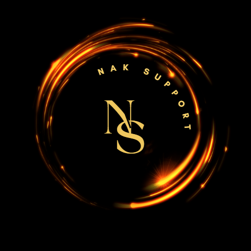

NAKsite
Table of Contents
CMD Meetings
20230513
NAKCmd Monthly meeting
- 2nd Saturday of each month @ 15:00 server time (Eastern/US)
What is NAKCmd?
TODO Revise and publish Admin Code of Conduct
- Hold outselves to a higher standard.
- No hyprocrisy! Admins and moderators are not immune to the rules.
TODO Revise and publish Expectations of Admins
- Clear communication from admins to their department leadership
- Use initiative when dealing with policies and tasks associated with their department
TODO Revise and publish Expectations of Moderators
- Something to offer the community without getting into administrative tasks
- Policing the servers and community
- Senior Moderators are to take punitive, escallation action towards rule violators
- Junion Moderators are to always record questionable actions observed and initiate the kick/ban process according to their rank
Update of Information
- Things are getting way out of date for both NAK Cmd and for players.
- We need to make sure it's clear who should be maintaining each piece of information
- And who is responsible for publishing it (if it's not the same person)
- And who and how do we track the changes into a changelog.
- New software to do this should likely wait until after we have established an R&D department
- We can leverage Guilded to centralize document storage and distribution
- When a new doc is uploaded that needs to be published create a task on that department's task board to publish that information wherever it's needed
- could be multiple places, make multiple tasks
TODO Create list of information available and needed by department ``TODO: Division Heads``
New Changes, Expectations and goals for each Division, Key Performance Indicators, Decisions on Changes
- Define a simple goal
- Define goals and share them with others for feedback
- CoS should assign goals to divisions
- Division heads should also create goals for their division
- All other changes should be reviewed with division heads before becoming a goal
- Propose potential changes
- Clearly define when these changes are expected
- Define what success looks like and how to measure it
- Make a decision to go forward
- Make the change
- Measure the impact
- Celebrate your success (publish results) or reverse the changes if they aren't positive.
- Division head or their delegate makes the call of any change go/no-go decision
- other Division admins can not overrule a decision made by a Division head
Player Interaction
Meeting extras
[World Time]
[World Time Buddy] https://worldtimebuddy.com
[How to implement change] ./Change.org Recommendations and tips
Upcoming Zeus proposed changes
- Zeus badge changes (Boxdogman)
- Remove enemy intel markers from map vote results
- Remove scoreboard vote results
NAK Ops by mission pbo (Michael)
[Org chart] ./NakOrgChart.pdf
[NAK Kanban] https://kanbanflow.com/board/e3MCGCe
[NAK Trello] https://trello.com/b/Y9nLfUZF/project-nakanniversary

20230610
Review accomplishments
S&E
- save loadout on ace arsenal
- reworking badge system
- adding advanced zeus badge on TS
- updaging sqf on altis to get filter working
- adding curated event on altis
- revamping tanoa mission
PR
protocol and doc for receiving youtube videos
validated and updated streaming guidelines
- awaiting review and approvals
created overall current state and generated backlog of tasks
- donation boards being designed
- investigate platforms for PR
- ways to engage communities via newsletters, social media etc.
- understand why players find nak, why they leave, why they stay
- promotional video
- awaiting approval
- revamping structured ops
- what kind of ops do players want?
- how can they communicate this?
Communications
not present today
Admin Management
promotion management chart created
- shows when mods have reached milestones for promotions
- allows for multiple department officers to facilitate promotions instead of just dept head
creating a video on how to do bans
- timestamps direct to examples of each rule violation
multiple videos for other FAQs for new admins
- how to teleport
- spectate
- use the admin menu
CoS
Website needs complete revamp
- might need paid plugins, themes
Need to push for donations
- more Box for Box depends on it
Paypal is how we pay for things
- need a debit card for places that don't accept paypal
- will be creating a more transparent way to show our expenses to encourage players to donate
HR
Ask players about their skills
- This doesn't mean you will get tasks assigned to you, it might be just to have someone come to you for advice
Continue to encourage all admins to add their skills to doc
- make doc consumable
players can help without being part of NAK CMD
Propose Staff position for non-admin non-mod workers.
- New tag for Content Contributor (just contributor?)
- Nak bucks for work?
R&D
Add Department tags to Guilded, discord, TS, more?
Create Index site for Youtube videos?
- for admins?
- maybe for all documents?
*